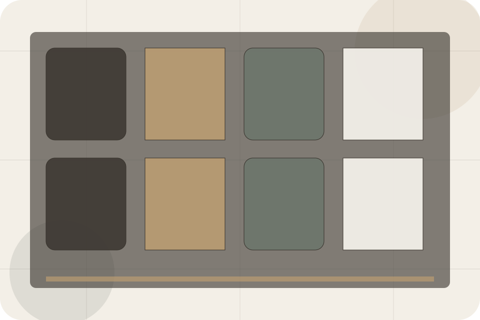
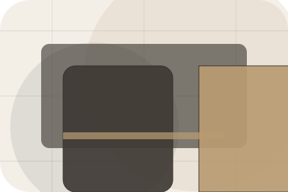
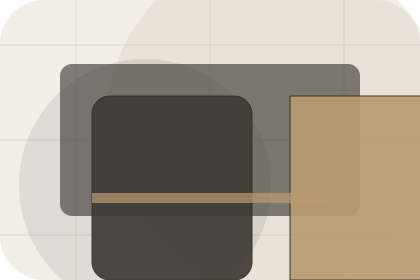
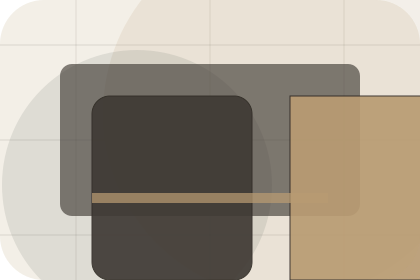
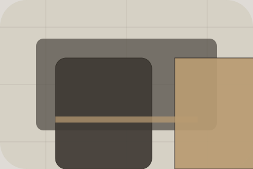

Amenities / 01
Amenities by Stay
Amenities shaped for hospitality, hotels & guest accommodation decisions.
Amenities opens as a clear hospitality decision hub: what Stay offers, who it helps, why it matters, and which route to take first.
The first screen combines positioning, proof, primary action, and fast internal navigation, so people can act immediately or compare the rest of the amenities route with context.
Check availabilityPlan the visitReserve with context
Serene full-bleed stay hero
Check Availability
Select the closest route and Stay keeps the next step, proof, and follow-up expectation aligned with comfort and availability.

Amenities / 02
Facilities
Facilities adds hospitality context to the amenities route, using the quiet retreat booking flow structure to support comfort and availability before visitors choose a next step.
Stay uses retreat room cards and focused copy to make the decision easier to scan, aligning the section with comfort and availability rather than filling space.
Explore Amenities- 01
Context
Facilities gives the page a specific angle instead of repeating the navigation label.
- 02
Judgment
The retreat room cards show what to compare, what to avoid, and what matters most for hospitality, hotels & guest accommodation visitors.
- 03
Direction
The final cue points to a useful internal route so the section keeps the journey moving.
Amenities / 03
Dining
Dining adds hospitality context to the amenities route, using the quiet retreat booking flow structure to support comfort and availability before visitors choose a next step.
Stay uses retreat room cards and focused copy to make the decision easier to scan, aligning the section with comfort and availability rather than filling space.
Explore AmenitiesStay structures dining around context, judgment, and a clear next route so visitors can compare the block quickly before they check availability.
Check AvailabilityAmenities / 04
Spa
Spa adds hospitality context to the amenities route, using the quiet retreat booking flow structure to support comfort and availability before visitors choose a next step.
Stay uses retreat room cards and focused copy to make the decision easier to scan, aligning the section with comfort and availability rather than filling space.
Explore Amenities
Context
Spa gives the page a specific angle instead of repeating the navigation label.
Amenities / 05
Pool
Pool adds hospitality context to the amenities route, using the quiet retreat booking flow structure to support comfort and availability before visitors choose a next step.
Stay uses retreat room cards and focused copy to make the decision easier to scan, aligning the section with comfort and availability rather than filling space.
Explore AmenitiesContext
Pool gives the page a specific angle instead of repeating the navigation label.

Judgment
The retreat room cards show what to compare, what to avoid, and what matters most for hospitality, hotels & guest accommodation visitors.
Direction
The final cue points to a useful internal route so the section keeps the journey moving.
Amenities / 06
Workspace
Workspace adds hospitality context to the amenities route, using the quiet retreat booking flow structure to support comfort and availability before visitors choose a next step.
Stay uses retreat room cards and focused copy to make the decision easier to scan, aligning the section with comfort and availability rather than filling space.
Explore AmenitiesWorkspace gives the page a specific angle instead of repeating the navigation label.
The retreat room cards show what to compare, what to avoid, and what matters most for hospitality, hotels & guest accommodation visitors.
The final cue points to a useful internal route so the section keeps the journey moving.
Amenities / 07
Family
Family adds hospitality context to the amenities route, using the quiet retreat booking flow structure to support comfort and availability before visitors choose a next step.
Stay uses retreat room cards and focused copy to make the decision easier to scan, aligning the section with comfort and availability rather than filling space.
Explore AmenitiesContext
Family gives the page a specific angle instead of repeating the navigation label.
Judgment
The retreat room cards show what to compare, what to avoid, and what matters most for hospitality, hotels & guest accommodation visitors.
Direction
The final cue points to a useful internal route so the section keeps the journey moving.
Amenities / 08
Access
Access adds hospitality context to the amenities route, using the quiet retreat booking flow structure to support comfort and availability before visitors choose a next step.
Stay uses retreat room cards and focused copy to make the decision easier to scan, aligning the section with comfort and availability rather than filling space.
Explore AmenitiesContext
Access gives the page a specific angle instead of repeating the navigation label.
Judgment
The retreat room cards show what to compare, what to avoid, and what matters most for hospitality, hotels & guest accommodation visitors.
Direction
The final cue points to a useful internal route so the section keeps the journey moving.
Amenities / 09
Details
Details adds hospitality context to the amenities route, using the quiet retreat booking flow structure to support comfort and availability before visitors choose a next step.
Stay uses retreat room cards and focused copy to make the decision easier to scan, aligning the section with comfort and availability rather than filling space.
Explore Amenities
Context
Details gives the page a specific angle instead of repeating the navigation label.
Amenities / 10
Check Availability
Stay closes the amenities route with a clear action, a quick reminder of the value, and a low-friction way to check availability.
Visitors who are ready can use the primary action. Visitors who are still comparing can scan the section links, proof, and support routes before they check availability.
Check AvailabilityThe final block keeps the choice simple: act now, compare one more proof route, or send enough detail for a focused response.
Check Availabilitycomfort and availability
Check Availability
A hotel site with serene full-bleed rooms, understated booking modules, experience cards, and policy calm. Amenities ends with a direct path to check availability, plus enough context for visitors who still need to compare.

Check AvailabilityNotes
Rates, availability, cancellation, and access policies depend on selected dates and booking terms.